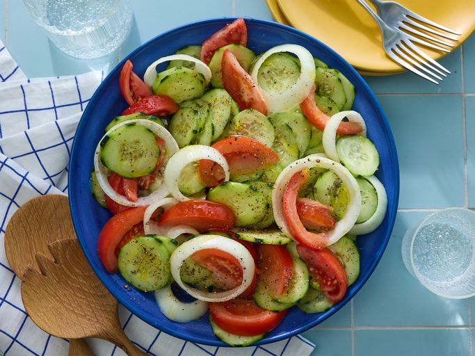

Cucumber Tomato Salad

This recipe for cucumber tomato salad has most of the ingredients right there in the title. Cool, crisp cucumbers and juicy ripe tomatoes are teamed up with onions in a satisfying mix of flavor and texture. But what pulls this dish together is the tart and tangy salad dressing made of water, vinegar, oil, sugar, salt, and pepper.
Ingredients
- 3 Cucumbers, peeled and sliced 1/4-inch thick
- 3 Tomatoes, cut into wedges
- 1 Onion, sliced into rings
- 1/2 cup distilled white Vinegar
- 1/4 cup Vegetble Oil
- 1/4 cup Sugar
- 1 tsp Salt or to taste
- 1 cup distilled Water
- 1 tsp freshly ground black pepper or to taste
Steps
- Gather all ingredients
- Whisk water, vinegar, Oil, sugar, Salt and pepper together in a large bowl until smooth
- Add cucumber, tomatoes, onion and stir to coat
- Cover bowl with plastic wrap; refrigerate for atleast 2 hourd for best flavor results
- Enjoy